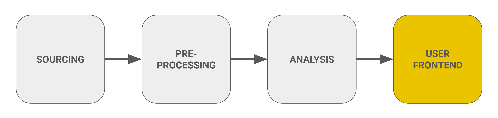

Step 3: Building the User Frontends
Overview
This section describes the user frontends of the Streamlit application. The application has two pages:
- The Visitor Dashboard (main page) shows the visitor forecast for the next seven days and a real-time map with parking occupancy, visitor sensors, and visitor centre counts. It is protected by a general access password.
- The Data Hub lets the park administration upload, query, and download data. It is protected by a separate admin password.

Visitor Dashboard
The Visitor Dashboard serves as a comprehensive tool for visitors to the Bavarian Forest National Park, offering real-time data and insights to enhance their experience.
-
Visitor Traffic Forecast:
- Users select a region: the whole park (Bayerischer Wald Total) or one of the six regions.
- A weekly view shows the predicted number of visitors (IN + OUT) per day for the next seven days.
- An hourly view shows the predicted IN and OUT values per hour for a selected day. The y-axis is fixed to the maximum of the week, so days can be compared with each other.
- The forecast is recalculated every 3 hours (see Real-Time Inference).
-
Real-Time Map: The map is refreshed every 15 minutes and shows the time of the last update. It is built with Folium (Leaflet) on the TopPlusOpen Light Grau basemap of the Federal Agency for Cartography and Geodesy (BKG). It can be panned and zoomed, and a legend above the map explains the symbols. The map contains:
- Forecast regions: the six regions of the visitor forecast as areas. Regions can be highlighted through the interactive legend.
- Parking lots: a parking icon for each of the 14 parking sensors in the Bayern Cloud. The icon colour shows the current occupancy on a continuous scale from blue (low) through violet to red (high); grey means that no data is available. The tooltip shows free spaces, occupancy rate, and the time of the measurement.
- Visitor sensors: a walker icon for each real-time visitor sensor at the animal enclosures Lusen and Falkenstein. The tooltip shows the current number of visitors, the total for the day, and the time of the measurement. Markers that are close together are grouped into clusters, which expand when zooming in.
- Visitor centres: an info icon for each visitor centre counted with Vemcount (Hans-Eisenmann-Haus, Haus zur Wildnis, Waldgeschichtliches Museum St. Oswald). The tooltip shows the visitors entering and leaving in the last hour, the number currently inside, and the total number of visitors for the day so far.
Below the map, users can select a parking lot to see its free spaces, capacity, and occupancy rate as figures.
-
Recreational Activities:
The dashboard highlights various recreational activities available in the park, including:
- Hiking: 🥾 Explore trails through the scenic wilderness. Learn More
- Cycling: 🚴♂️ Cycle through picturesque routes. Learn More
- Camping: 🏕️ Relax under the stars at designated camping spots. Learn More
- Snowshoeing: 🌨️ Enjoy snowshoeing during the winter months. Learn More
- Skiing: 🎿 Ski on the best cross-country trails. Learn More
-
Language Selection:
- The dashboard supports both German and English languages, making it accessible to a broader audience.
-
Additional Information:
- A section for Other Information provides valuable insights to visitors:
- Visitor Centers: 🏛️ Information about the main visitor centers in the Bavarian Forest. Learn More
- Popular Entrances to the Park:
- Entrance 1: Falkenstein: Access to hiking trails and the Falkenstein mountain. Learn More
- Entrance 2: Lusen: Gateway to challenging trails on the Lusen mountain. Learn More
- Best Way to Get There: 🚌 Information on transportation options to reach the Bavarian Forest. Learn More
- A section for Other Information provides valuable insights to visitors:
Data Hub
The Data Hub is the data access point for the park administration. It is protected by the admin password and has two tabs: Query & Download and Upload.
Query & Download
-
Select one or more data categories:
Category Source Permanente Besucherzählung (Eco-Counter) Uploaded files (hourly visitor sensor counts) (legacy) Hütten: Zählungen, Wetterstationsdaten, Öffnungszeiten & Feiertage Uploaded files (the former daily Excel file of the administration) Sonderzählungen Uploaded files (special counting campaigns) Parkplatzzählungen Fetched live from the Bayern Cloud Wetterdaten Fetched live from Meteostat Häuserzählungen der Vemcount API Fetched live from the Vemcount API (hourly) -
Optionally switch on Specify time range and choose a start and end date and time. The earliest selectable date depends on the chosen categories. Without a time range, all available data is returned.
- Click Query data. All selected categories are combined into one table on a shared time column (
general_time_index, full outer join). If the same timestamp was uploaded more than once, the most recent upload is kept. Daily values of the legacy category are filled into all hours of the day. - A preview of the result is shown. The data can then be downloaded as a ZIP file that contains the data as CSV and a data dictionary (Excel) for the selected categories. Each query is also logged to Azure.
Upload
- Choose the category the data belongs to: Permanente Besucherzählung (Eco-Counter) (hourly), (legacy) Hütten (daily), or Sonderzählungen (hourly).
- Upload one or more files (CSV, XLSX, or XLS). The time column must be in Berlin local time; the page shows a warning about this.
- Each file is validated and processed. If it contains columns that do not exist in the category yet, a warning is shown. Sensor names are harmonized using the renaming table in
src/config.py. - After checking the preview, click Upload. Both the original file and the processed data are saved to Azure Blob Storage. Newly uploaded Eco-Counter data is used the next time the model is trained.